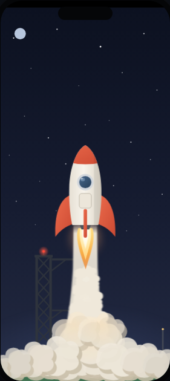
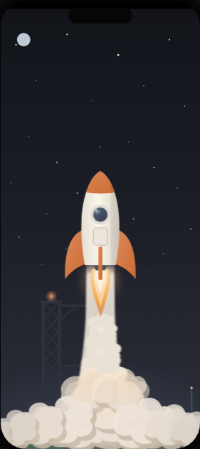
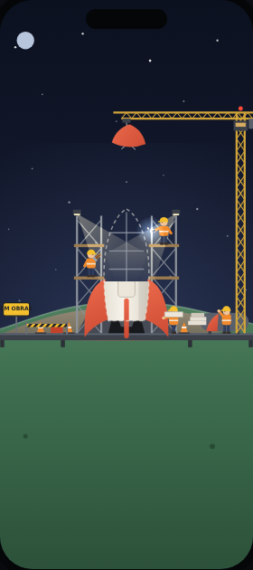
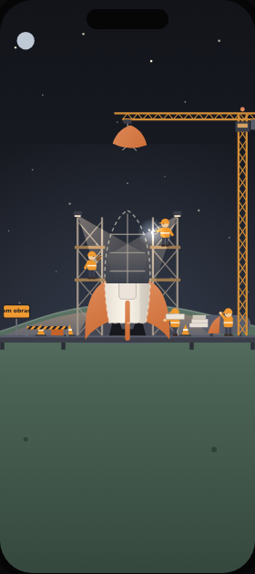
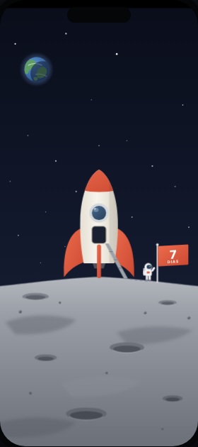
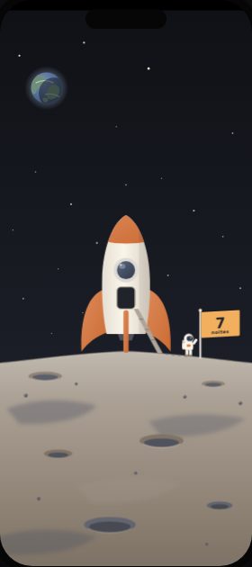

Mesmos desenhos, mesmo tempo, mesmas animações. Só as cores e os textos mudam: o céu sai do azul-marinho e vai pro grafite-azulado dos menus, o vermelho vira terracota, o fogo e os amarelos viram o âmbar do site, os brancos viram creme.
paleta das cenas
céu · grafite-azuladoestrelas e casco · cremebico e aletas · terracotafogo, bandeira, guindaste · âmbarterra · sageoceano e visor · azul de luarlua · pedra quente

hoje

proposta
decolagem
Céu grafite-azulado, o mesmo tom do fundo dos menus à noite.
Foguete creme com bico e aletas terracota. A chama fica âmbar e creme.
Torre e luz de aviso no tom quente. A fumaça continua clara.

hoje

proposta
meteoro e canteiro de obras
Explosão em âmbar e terracota, sem o vermelho saturado.
Guindaste, coletes e cones no âmbar do site, no lugar do amarelo de placa de trânsito.
Chão em sage escuro. Placa "em obras" em minúsculas, como os textos da marca.

hoje

proposta
pouso na lua
Lua em pedra quente em vez de cinza frio.
Bandeira âmbar com o número em grafite, igual aos botões dos menus. O texto muda de "DIAS" pra "noites", que é como o app conta a sequência.
Terra no céu com oceano azul de luar e continentes sage.